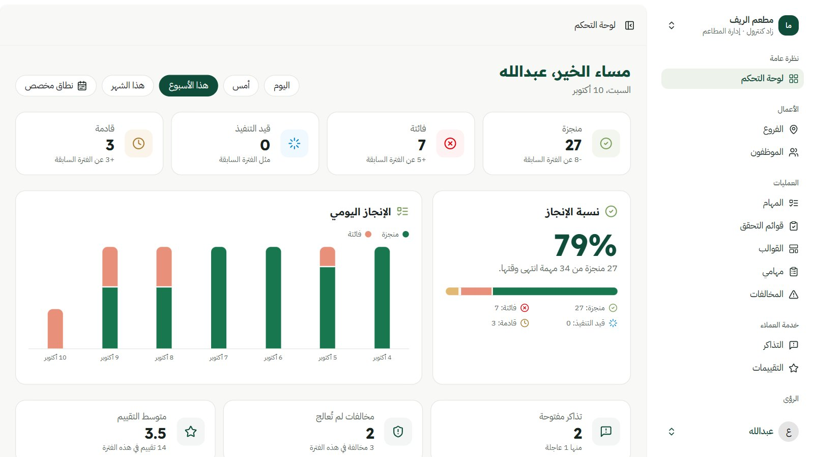
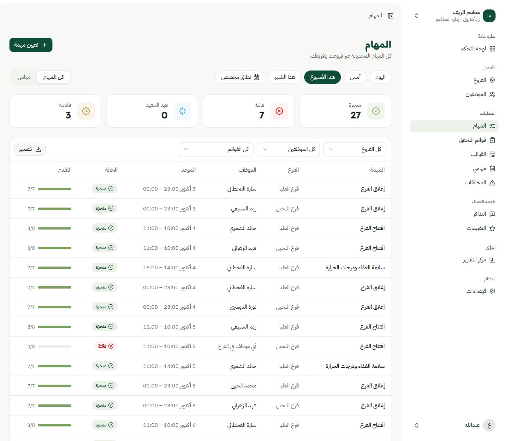
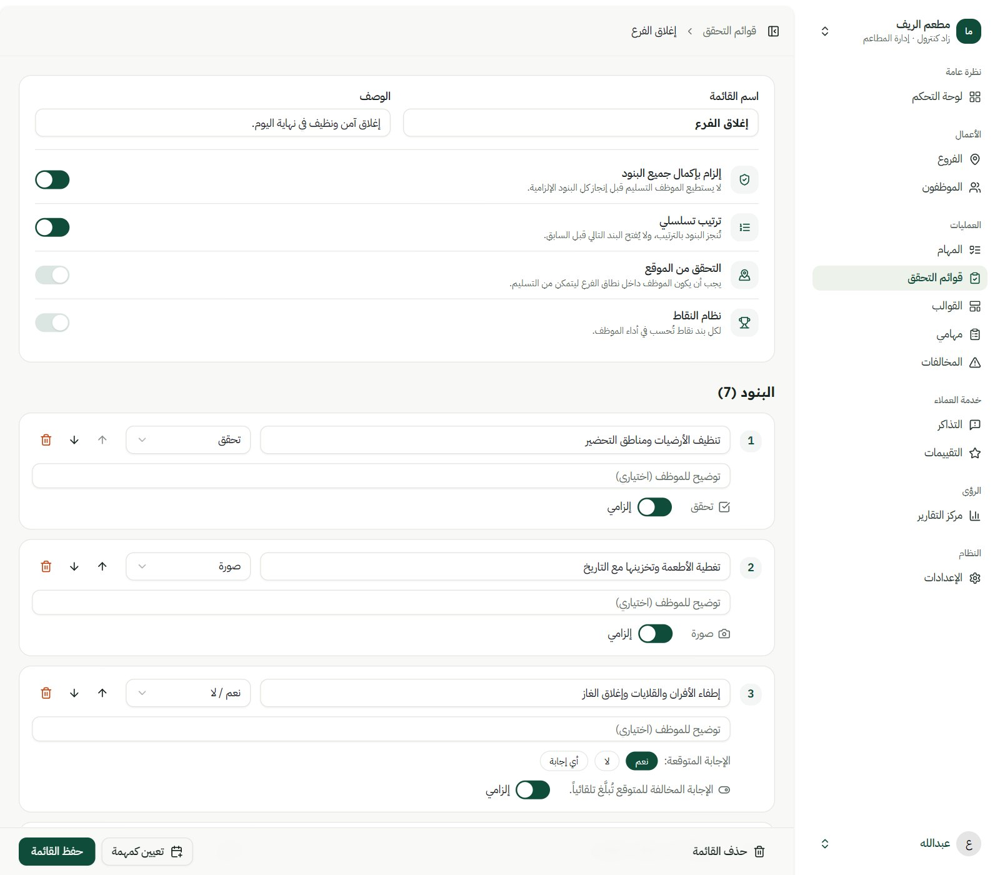
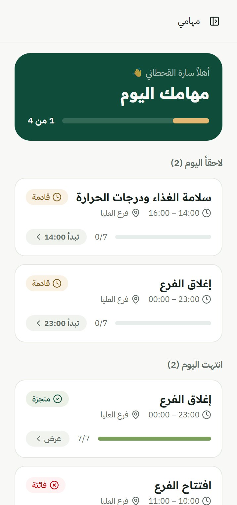
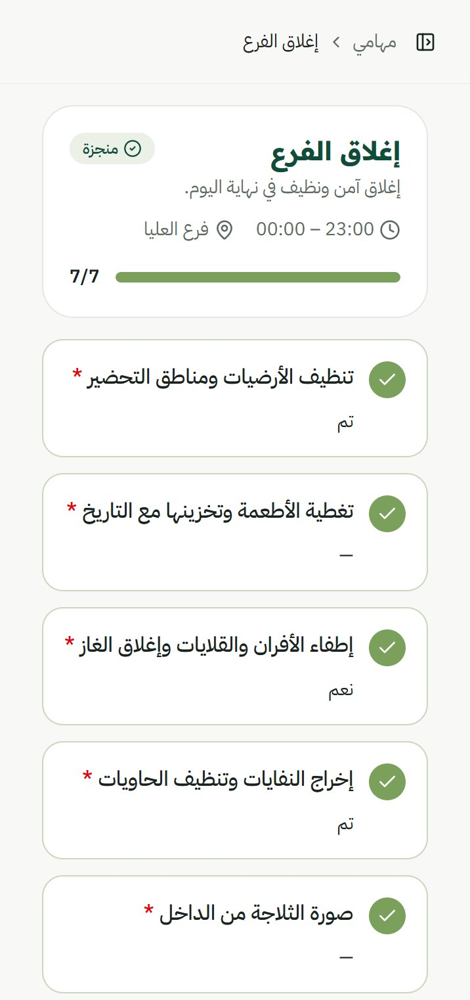

Zad Control
Multi-tenant SaaS · Web + Mobile web · Live · Arabic-first
Zad Control — Restaurant Operations Platform
A platform that runs a restaurant's day: owners set up their branches and team, build checklists from ready-made restaurant templates — opening, closing, food safety, municipality readiness — and schedule them as tasks once, daily or weekly. Employees work through their tasks on their phones: photos, readings and yes/no checks, inside the branch's location, with out-of-range answers flagged automatically. Managers follow everything from one dashboard, turn flagged answers into violations or tickets, log customer ratings, and export reports. It is live on Laravel Cloud, with a view-only demo that anyone can open in one click.
Architecture sketch




Employee — today's tasks

Employee — a finished checklist
$ php artisan test
✓ 106 passed
app/Actions/Tasks/GenerateTasks.php// Stands in for the daily scheduler so the app can sleep.
public function onceToday(int $restaurantId): void
{
$key = "tasks-generated:{$restaurantId}:".today()->toDateString();
// Atomic: only the first request of the day gets through.
if (Cache::add($key, true, now()->endOfDay())) {
$this->upcoming($restaurantId);
}
}
// Idempotent: running it twice never duplicates a task.
$task = Task::withoutGlobalScope('restaurant')->firstOrCreate(
['task_assignment_id' => $assignment->id, 'user_id' => $userId, 'starts_at' => $startsAt],
['ends_at' => $endsAt, 'status' => TaskStatus::Upcoming, /* … */],
);زاد كنترول
SaaS متعدد المطاعم · ويب + جوال · منشور · عربي أولًا
زاد كنترول — منصة تشغيل المطاعم
منصة تدير يوم المطعم: يجهّز المالك فروعه وفريقه، ويبني قوائم التحقق من قوالب جاهزة للمطاعم — افتتاح الفرع وإغلاقه وسلامة الغذاء والجاهزية لزيارة البلدية — ثم يجدولها مهامًا لمرة واحدة أو يوميًا أو أسبوعيًا. ينجز الموظفون مهامهم من جوالاتهم: صور، وقراءات، وأسئلة نعم/لا، من داخل موقع الفرع، مع إبلاغ تلقائي عن أي إجابة خارج المتوقع. ويتابع المدير كل ذلك من لوحة واحدة، فيحوّل الإبلاغات إلى مخالفات أو تذاكر، ويسجّل تقييمات العملاء، ويصدّر التقارير. المنصة منشورة على Laravel Cloud، ومعها نسخة للعرض يدخلها أي زائر بضغطة.
مخطط البنية
الموظف — مهام اليوم
الموظف — قائمة منجزة
$ php artisan test
✓ 106 passed
app/Actions/Tasks/GenerateTasks.php// Stands in for the daily scheduler so the app can sleep.
public function onceToday(int $restaurantId): void
{
$key = "tasks-generated:{$restaurantId}:".today()->toDateString();
// Atomic: only the first request of the day gets through.
if (Cache::add($key, true, now()->endOfDay())) {
$this->upcoming($restaurantId);
}
}
// Idempotent: running it twice never duplicates a task.
$task = Task::withoutGlobalScope('restaurant')->firstOrCreate(
['task_assignment_id' => $assignment->id, 'user_id' => $userId, 'starts_at' => $startsAt],
['ends_at' => $endsAt, 'status' => TaskStatus::Upcoming, /* … */],
);